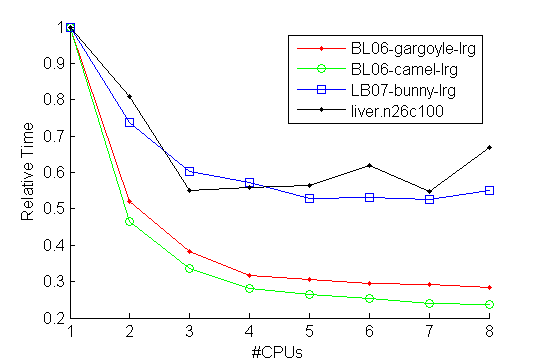

This page provides the software described in [1a,b]. The purpose is to allow for reproducibility of experiments published in [1a,b], in particular solving problems in DIMACS format, and for further research purposes. As such the package includes several openly distributed previous implementations (compared to in [1]) as well as our new algorithms. Please consult the corresponding README files about the use of these referenced implementations. The following algorithms are included:
BK - augmenting path method by Boykov-Kolmogorov [2] (implementation http://www.cs.ucl.ac.uk/staff/V.Kolmogorov/software.html)
HIPR -
push-relabel method by Goldberg-Tarjan-Cherkassky [3] (implementation http://www.avglab.com/andrew/soft.html)
DD -
dual decomposition method by Strandmark-Kahl [4] (http://www.maths.lth.se/matematiklth/personal/petter/cppmaxflow.php )
S-ARD
- sequential distributed method processing problem by parts in a limited memory [1b]
P-ARD - parallel distributed method [1b]
S/P-PRD - sequential and parallel reimplementation of
Delong-Boykov [5], as described in [1b]
There are no warranties and we take no responsibility. This version of software cannot be used for commercial purposes. Please contact the authors about other usage.
Copyright 2011 Alexander Shekhovtsov (shekhovt@fel.cvut.cz), Vaclav Hlavac (hlavac@fel.cvut.cz)
Download d_maxflow_ar.zip v1.1.0.
v 1.1.0: fixed problems with gcc, added new implementation of push-relabe for regular structure graphs (hpr1)
v 1.0.2: fixed bug in S/P-PRD cut extraction step
v 1.0.1: fixed missing files
|
|
|
|
Windows / Visual Studio
Open Visual Studio solution projects/d_maxflow.sln
Build it with one of the targets (say, Debug-Win32)
This should make libs exttype, d_maxflow, maxflow_GT, maxflow_DD, maxflow_BK in lib/ and targets cut_cost.exe, solve_dimacs.exe, solve_random.exe in
bin/d_maxflow.
maxflow_DD project requires boost libraries (http://www.boost.org/),
precompiled windows versions for x64 can be found here: http://boost.teeks99.com/. To build maxflow_DD, Setup environment variable BOOST_ROOT to point to the root of boost libraries and add $(BOOST_ROOT) to "VC++ Directories" include files. To allow solvers to use maxflow_DD, set the compiler option -Dsolver_DD on solve_random and solve_dimacs projects. This is not set by default.
|
Linux / gcc
Adjust the compiler and linker options in projects/cflags and projects/lflags
make -C projects/d_maxflow
This should make libs exttype, d_maxflow, maxflow_GT, maxflow_DD, maxflow_BK in bin/lib/d_maxflow and targets cut_cost, solve_dimacs, solve_random in
bin/d_maxflow.
Alternatively, build using Code::Blocks workspace projects/d_maxflow/d_maxflow.cdb.workspace
|
|
|
Run bin/d_maxflow/solve_random to test solvers with random problems. The list of solvers invoked and the kind of random problems generated are controlled from code/d_maxflow/solve_random.cpp::main()
Run bin/d_maxflow/solve_dimacs to run solvers on problems in DIMACS format. Problem and the solver are specified on the command line. Instances can be found at http://vision.csd.uwo.ca/maxflow-data/. One simple test instance with reference solutions is included in test/d_maxflow/. This instance is invoked if no arguments are provided.
We tested Win32/64 and Linux 32/64 compilations. Generally, 64bit compilations take about twice more memory and execute somewhat slower (because of memory bandwith and cache usage).
The runnig time reported excludes input parsing as well as other construction time. The current construction splits the problem into part files (uses disk) even for small instances. This take significant time.
The output of the solver is saved in the .sol file to where the instance was located and the minimum cut found is saved in the .cut file. To verify correctness run bin/d_maxflow_cut_cost on the output cut file. This verifies consistency between the cut value and the flow value. Feasibility of the flow is not verified independently, as it is problematic to implement for a large graph.
To reproduce published experiments, there are scripts provided in matlab/d_maxflow. Two scripts solve_all.m and parallel_competition.m can be used to invoke solvers on a set of problems. Their results are then collected into a tex table with collect_streaming.m and collect_parallel.m scripts. |
|
|
Contents of code/d_maxflow/
tests:
solve_dimacs -- command line interface for calling solvers on DIMACS problems
solve_random -- command line interface for calling solvers on random problems
solvers:
stream_ARD1 -- sequential ARD solver (S-ARD), using disk
stream_PRD -- sequential PRD solver (S-PRD), using disk
parallel_ARD1 -- parallel ARD solver (P-ARD)
parallel_PRD1 -- parallel PRD solver (P-PRD)
maxflow_BK -- augmenting path (BK)
maxflow_GT -- push-relabel (HIPR)
maxflow_HPR -- push-relabel with seeds (HPR)
splitter:
region_discharge -- splitter from DIMACS to auxiliary ‘part’ files
region_graph -- the shared part of the data (inter-region edges, etc)
DIMACS parser:
dimacs_parser -- parses the file and sends the arcs to a dimacs_parser_callback class
implementation:
sequential_discharge -- common code for sequential solvers
parallel_discharge -- common code for parallel solvers
PRD -- implementation of “discharge” in PRD, using seed_hi_pr
seed_hi_pr -- push-relabel with seeds
seed_buckets
seed_BK1 -- implementation of “discharge” in ARD (the efficient version described in TR).
Build targets:
exttype.lib -- arrays and memory management
d_maxflow.lib -- all implemented and wrapped solvers
cut_cost.exe -- tool to check the cost of a cut saved in the text file for a problem in the DIMACS format very inefficient, but transparent to verify
solve_dimacs.exe -- solve the problems in the DIMACS format, report results and save the minimum cut
solve_random.exe -- solve a random problem
rpr_dimacs.exe -- solve DIMACS problem with regulargrid structure using regionpushrelabel
|
|
|
To call the solvers directly use code/d_maxflow/solve_random.cpp as an example. The instance of the problem is passed to the solver using the following double-loop interface:
Initialization:
constructor->allocate1(n,0,S,T,d,sz); //here n - number of nodes in the graph, S,T - surce and sink indexes, d,sz - dimensionality and size of the problem (used by splitter, set d=1 if not available)
Then the data is passed by enumerating all the edges of the graph and their capacities. This is done twice. First time, the constructor counts how much memory will be needed for storing the problem parts, the second time it actuall constructs the graph and stores the data.
for(int loop=0;loop<2;++loop){//first iteration only inspects the graph structure, the second one stores the data
for(int e=0;e<m;++e){//loop over graph edges
constructor->read_arc(loop,u,v,cap1,cap2);
};
constructor->allocate2(loop); //this makes memory allocation after the first pass is complete
};
constructor->allocate3(); //this performs some final steps
With this interface no intermediate storage of the graph is used, the data is passed to the solver internal representation (which differs among solvers).
The dimacs_parser object when reading the input from the DIMACS file also makes it twice to pass the problem with the double-loop interface. The current pipeline to solve problem is as follows:
solve problem as a whole:
parser / other source |
-> solver |
to solve problem by parts:
parser / other source |
-> splitter |
-> solver subproblem1 |
|
|
-> solver subproblem2 |
|
|
-> ... |
where each arrow (->) denotes a double-loop interface to pass the graph or a part sub-graph. So all the solvers and the splitter support construction via double-loop interface. There is a caviate however in the current implementation, that the splitter is implemented in a way that it first create files on the disk corresponding to problem parts in the intermediate format and only then constructs the subproblems. This is to be improved. I will also try to improve the end-user interface and clarity. |
/todo: abstract graph implementation, merging the common part of seed_BK and seed_hipr implementations
/todo: alternative graph implementations, regular grid graph implementation
/todo: MPI implementation on a cluster |
|
|
Here we will publish additional performance tests on the benchmark problems.
Parallel test on linux 64bit 16Gb | 8CPUs (Intel(R) Core(TM)i7 CPU 870@2.9GHz)
Relative computation time vs #CPUs used
|  |
I believe that the limiting factor in parallelization is the memory bandwidth. The sequential part
of the computation ocuppy less than 10% of the total time for all of the problems. The fully
parallel part should exhibit linear speed-up in the ideal case of even load. The load is of course
somewhat uneven, but still for liver.n26c100 (for example) there are 64 regions, which balances the load.
Still there is no speed-up observed in the first iteration of the parallel part when going from 4 to 8 CPUs.
It is most probable that reducing memory requirements (e.g. by having dedicated graph implementation
for regular grids) would also lead to a speed-up of the parallel solver. We also observed that 32bit
compilation (pointers take 32bits) runs faster than 64bit compilation.
|
|
|
[1a] A. Shekhovtsov, V. Hlavac: A Distributed Mincut/Maxflow Algorithm Combining Path Augmentation and Push-Relabel, EMMCVPR 2011. [pdf], [bib].
[1b] A. Shekhovtsov, V. Hlavac: A Distributed Mincut/Maxflow Algorithm Combining Path Augmentation and Push-Relabel, Research Report K333--43/11, CTU--CMP--2011—03, Czech Technical University. [pdf], [bib]
[2] Y. Boykov, V. Kolmogorov: An experimental comparison of min-cut/max-flow algorithms for energy minimization in vision. In PAMI, volume 26, 2004
[3] B. V. Cherkassky, A. V. Goldberg: On implementing push-relabel method for the maximum flow problem. Technical report, 1994.
[4] P. Strandmark, F. Kahl: Parallel and distributed graph cuts by dual decomposition, CVPR 2010.
[5] A. Delong and Y. Boykov: A scalable graph-cut algorithm for N-D grids. CVPR 2008. |
|
|